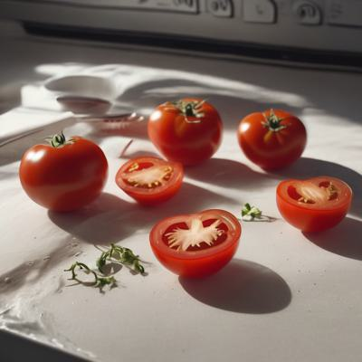
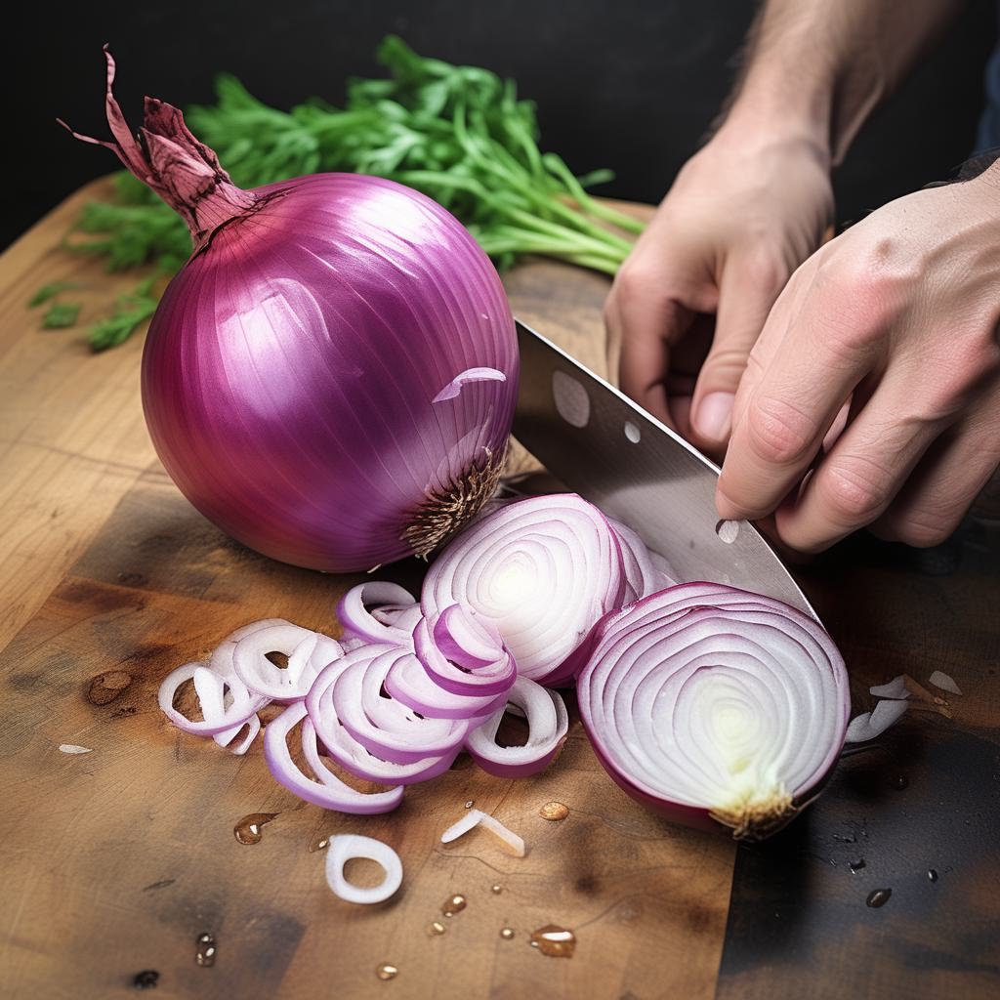
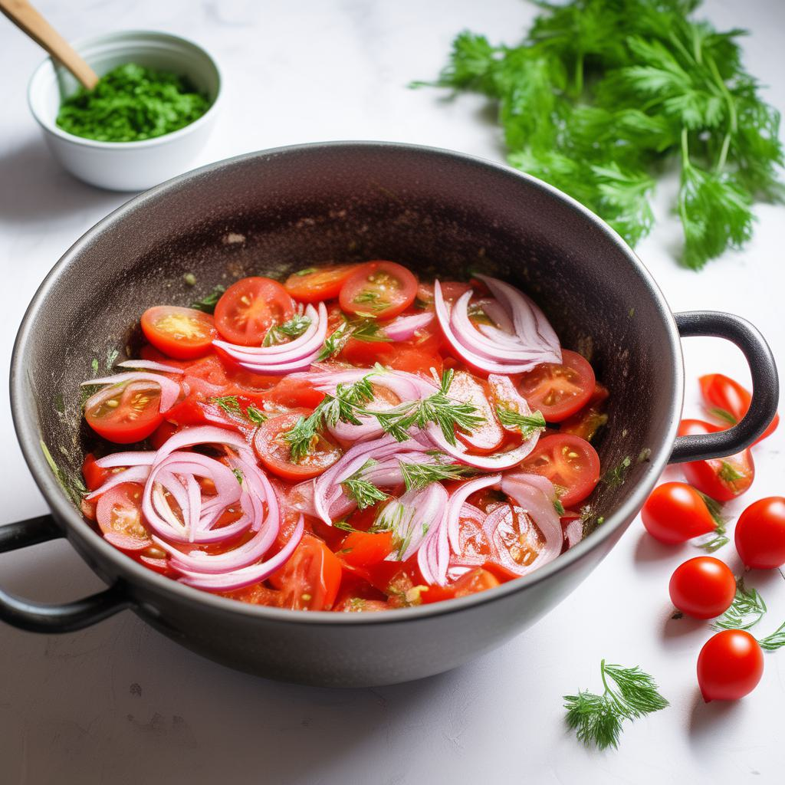
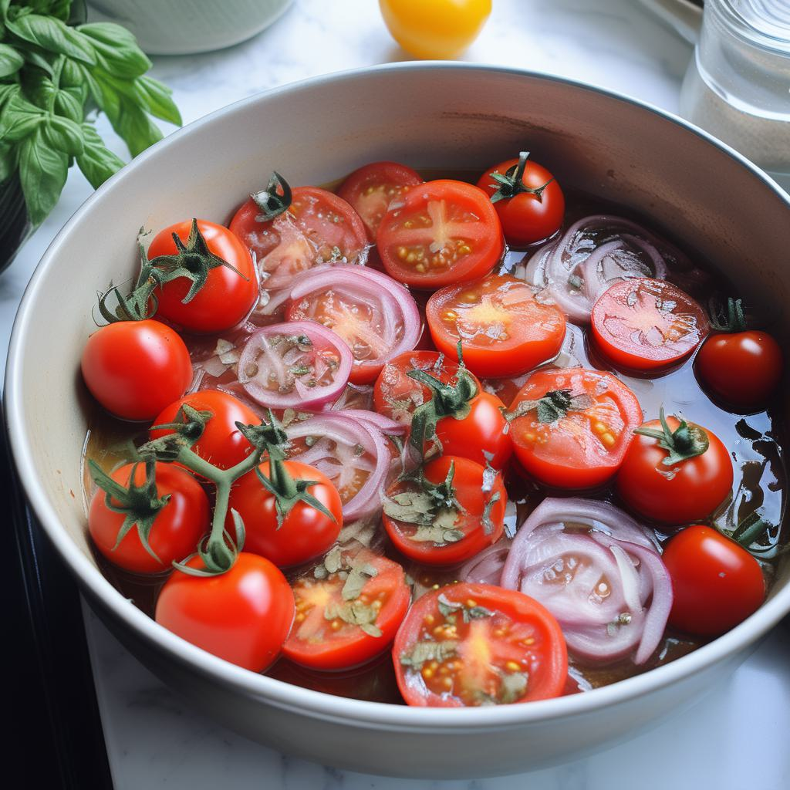

- 1. Помидоры вымойте и нарежьте пополам или четвертинами, в зависимости от их размера.

- 2. Лук мелко нарежьте.

- 3. В большой миске смешайте нарезанные помидоры, лук, нарезанный чеснок, мелко нарезанный укроп или петрушку.

- 4. Накройте миску с закуской пленкой или крышкой и поставьте в холодильник на несколько часов (желательно на ночь), чтобы помидоры пропитались маринадом и стали ароматными.
- Приятного аппетита!
Эта закуска отлично подойдет к шашлыку и добавит свежести к вашему приему пищи.